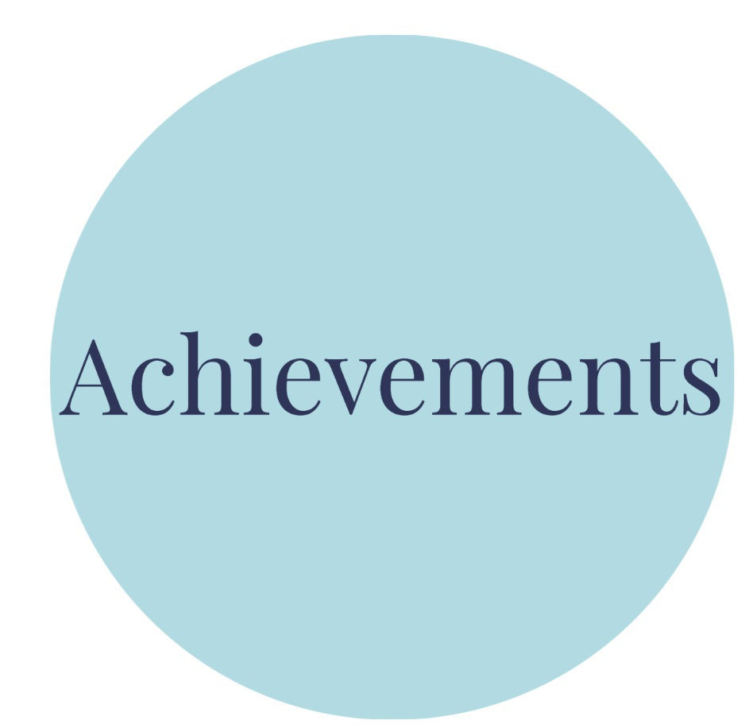
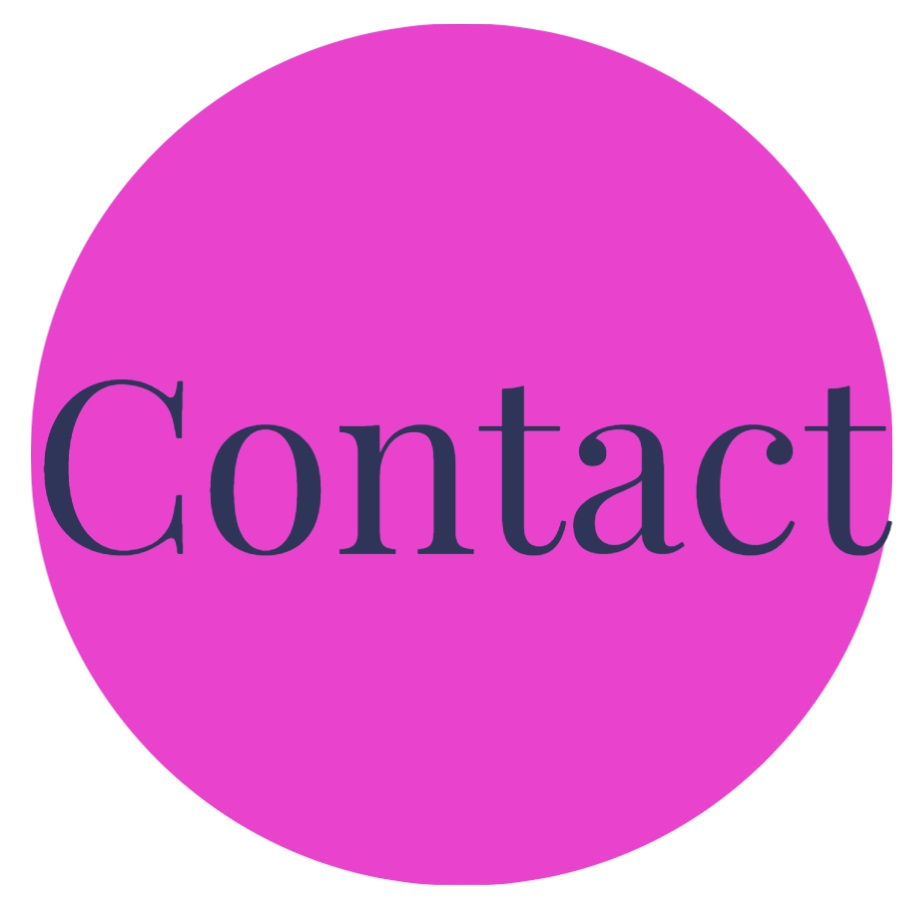

HELLO
A little bit about me and the skills I have gained with my time working us an Intern at IDEMS
This is a space to learn a litle bit more about me,my education,my achievement and my work experience which have helped me become more aware of programming in software development.
With this skills, I hope to show the achievements that I gained in the one year that I have learn how to use programming languanges and also to develop software with my time at MHAC as an Intern.
Thus that far has allowed me even to be able to gain some other important skill like communication skills and also leadership skill.